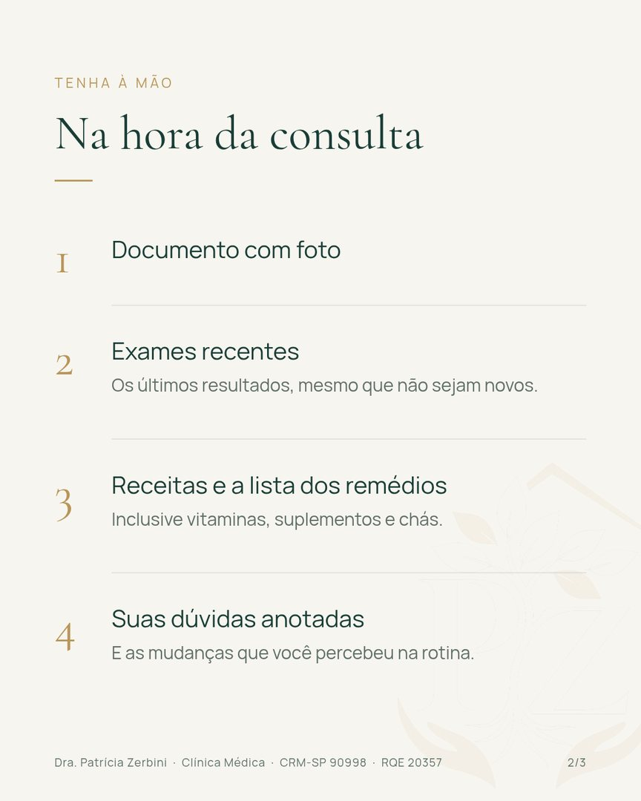

Perfil, capas dos destaques e os 9 primeiros posts com as legendas prontas. As artes seguem a identidade do site e as regras do CFM para publicidade médica.
Como o perfil vai ficar
Prévia depois dos 9 posts publicados. O último post publicado aparece primeiro na grade.
drapatriciazerbini
Médico(a)
Dra. Patrícia Zerbini
Clínica Médica · cuidado da pessoa idosa
🏠 Consultas em casa e no consultório, em Santos
CRM-SP 90998 · RQE 20357
👇 Agende pelo WhatsApp
O CRM é de São Paulo? As artes dizem CRM-SP 90998.
O usuário @drapatriciazerbini é sugestão. Se estiver ocupado, @dra.patriciazerbini.
A pós em geriatria não foi citada. Se quiser citar, o CFM pede a forma “Pós-graduação em Geriatria (não especialista)”.
Textos e fotos: pode pedir qualquer troca.
Configuração da conta
Conta profissional, categoria Médico(a).
Link: drapatriciazerbini.com.br. Botão de contato: WhatsApp (13) 99668-0402.
Ligar o Instagram ao mesmo portfólio da Meta do WhatsApp. É o que permite anúncio com botão direto para o robô.
Regras do CFM já respeitadas
Nome, CRM e RQE em todas as artes e legendas.
Sem a palavra “geriatra”: o RQE é de Clínica Médica.
Sem foto de paciente, sem antes e depois, sem promessa de resultado. As fotos são ilustrativas.
Valores ficam no WhatsApp, fora dos posts.
Destaques
Nome
Capa
Stories
Em casa
destaque-em-casa.png
p02 e p07
Consultório
destaque-consultorio.png
p08
Agendar
destaque-agendar.png
p09
Dúvidas
destaque-duvidas.png
p04, p05 e p06
Sobre
destaque-sobre.png
p01
Os 9 posts, na ordem de publicação
Sugestão: publicar os 6 primeiros antes de começar os anúncios e depois 2 por semana. Nos carrosséis, arraste as imagens para o lado.
01
Apresentação
Imagem única
p01-apresentacao.png
Legenda
Prazer, sou a Dra. Patrícia Zerbini. 🌿
Sou médica, com atuação em clínica médica e atenção especial à pessoa idosa. Acredito em uma consulta sem pressa: ouvir a história, entender a rotina e cuidar junto com a família.
Atendo no consultório, no Gonzaga, e também na casa do paciente, em Santos e São Vicente.
Por aqui, vou compartilhar orientações simples para o dia a dia de quem cuida e de quem é cuidado.
📲 Agendamento pelo WhatsApp (13) 99668-0402. Link na bio.
Dra. Patrícia Zerbini · Clínica Médica · CRM-SP 90998 · RQE 20357
#Santos #SãoVicente #CuidadoDoIdoso #ConsultaDomiciliar #ClínicaMédica #Longevidade
Como funciona a consulta em casa? 🏠
1. Você chama no WhatsApp e informa o endereço e os dias ou horários que não servem.
2. A equipe confirma o dia, o horário e o valor antes da visita.
3. A consulta acontece em casa, com tempo para ouvir, examinar e revisar os remédios. A família pode participar.
Atendemos em Santos e São Vicente. Outras cidades, sob consulta.
A consulta em casa é um atendimento programado. Em emergência, ligue 192 (SAMU).
📲 (13) 99668-0402
Dra. Patrícia Zerbini · Clínica Médica · CRM-SP 90998 · RQE 20357
#Santos #SãoVicente #CuidadoDoIdoso #ConsultaDomiciliar #ClínicaMédica #Longevidade
03
Frase
Imagem única
p03-frase.png
Legenda
Envelhecer bem é um cuidado de todos os dias. 🌿
Sono, alimentação, movimento, convivência e acompanhamento médico. Pequenos cuidados, somados ao longo do tempo, fazem diferença.
Dra. Patrícia Zerbini · Clínica Médica · CRM-SP 90998 · RQE 20357
#Santos #SãoVicente #CuidadoDoIdoso #ConsultaDomiciliar #ClínicaMédica #Longevidade
04
O que separar
Carrossel · 3 imagens
p04-o-que-separar-1.png

p04-o-que-separar-2.pngp04-o-que-separar-3.png
Legenda
O que separar para a consulta? 📋
• Documento com foto
• Exames recentes, mesmo que não sejam novos
• Receitas e a lista de todos os remédios, inclusive vitaminas, suplementos e chás
• Suas dúvidas anotadas e as mudanças que você percebeu na rotina
Um familiar pode acompanhar, sempre com a concordância de quem vai ser atendido.
🔖 Salve este post para lembrar no dia.
Dra. Patrícia Zerbini · Clínica Médica · CRM-SP 90998 · RQE 20357
#Santos #SãoVicente #CuidadoDoIdoso #ConsultaDomiciliar #ClínicaMédica #Longevidade
Sinais na rotina que merecem uma conversa com o médico:
• Esquecimentos novos ou mais frequentes
• Quedas ou tropeços
• Perda de peso ou de apetite
• Mudanças no sono ou no humor
• Dificuldade com os remédios
Nem sempre é algo grave, mas vale entender o que está acontecendo. Uma consulta com calma, com a família junto, ajuda muito.
Em situações de urgência, procure o pronto-socorro ou ligue 192.
Dra. Patrícia Zerbini · Clínica Médica · CRM-SP 90998 · RQE 20357
#Santos #SãoVicente #CuidadoDoIdoso #ConsultaDomiciliar #ClínicaMédica #Longevidade
06
Remédios
Imagem única
p06-remedios.png
Legenda
Muitos remédios ao mesmo tempo? 💊
Com o passar dos anos, é comum a lista de medicamentos crescer, muitas vezes receitados por médicos diferentes. Revisar essa lista com calma, entendendo para que serve cada um, faz parte de toda consulta.
Traga todos os remédios, inclusive vitaminas, suplementos e chás.
Importante: não pare nem mude nenhum remédio por conta própria. Converse antes com o médico que acompanha você.
Dra. Patrícia Zerbini · Clínica Médica · CRM-SP 90998 · RQE 20357
#Santos #SãoVicente #CuidadoDoIdoso #ConsultaDomiciliar #ClínicaMédica #Longevidade
07
Família
Imagem única
p07-familia.png
Legenda
Quem cuida também precisa de orientação. 🤝
Filhos, netos e cuidadores são parte importante do cuidado. Na consulta, os familiares são bem-vindos para contar o que observam no dia a dia e tirar as suas dúvidas, sempre com a concordância de quem é atendido.
Dra. Patrícia Zerbini · Clínica Médica · CRM-SP 90998 · RQE 20357
#Santos #SãoVicente #CuidadoDoIdoso #ConsultaDomiciliar #ClínicaMédica #Longevidade
08
Consultório
Imagem única
p08-consultorio.png
Legenda
Nosso consultório fica no Gonzaga, em Santos. 📍
Rua Dr. Tolentino Filgueiras, 119.
Também atendemos em casa, em Santos e São Vicente.
📲 Agende pelo WhatsApp (13) 99668-0402.
Dra. Patrícia Zerbini · Clínica Médica · CRM-SP 90998 · RQE 20357
#Santos #SãoVicente #CuidadoDoIdoso #ConsultaDomiciliar #ClínicaMédica #Longevidade
09
Como agendar
Imagem única
p09-como-agendar.png
Legenda
Como agendar? 📲
Pelo WhatsApp (13) 99668-0402, a qualquer hora. Por lá você vê os valores, tira dúvidas e pede a sua consulta, no consultório ou em casa. A equipe confirma o dia e o horário.
O link está na bio. 🌿
Dra. Patrícia Zerbini · Clínica Médica · CRM-SP 90998 · RQE 20357
#Santos #SãoVicente #CuidadoDoIdoso #ConsultaDomiciliar #ClínicaMédica #Longevidade
Os arquivos em tamanho real (1080 × 1350 px nos posts, 1080 × 1920 px nas capas) estão na pasta DRA PATRICIA › brand › instagram, com os mesmos nomes mostrados abaixo de cada imagem.